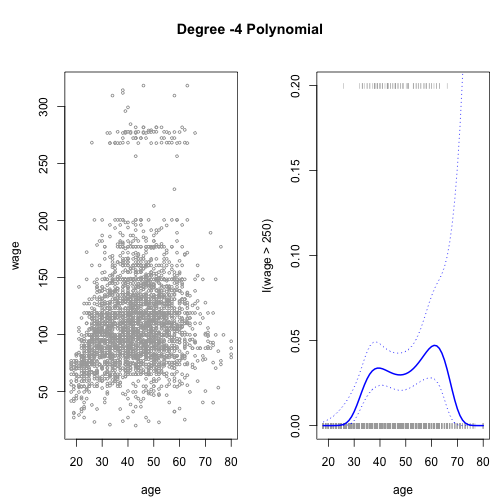
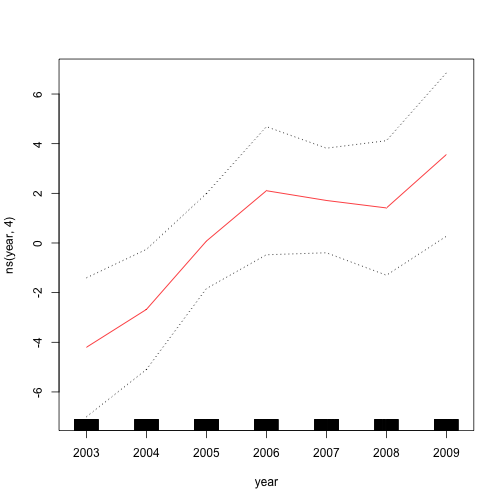
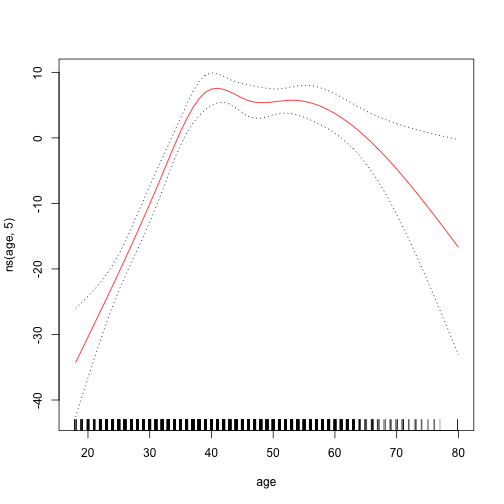

We begin by loading that ISLR package and attaching to the Wage dataset that we will be using throughtout this exercise.
library(ISLR)
attach(Wage)
Let's fit a linear model to predict wage with a forth-degree polynomial using the poly()
fit <- lm(wage ~ poly(age, 4), data = Wage)
coef(summary(fit))
| Estimate | Std. Error | t value | Pr(>|t|) | |
|---|---|---|---|---|
| (Intercept) | 111.70361 | 0.7287409 | 153.283015 | 0.0000000 |
| poly(age, 4)1 | 447.06785 | 39.9147851 | 11.200558 | 0.0000000 |
| poly(age, 4)2 | -478.31581 | 39.9147851 | -11.983424 | 0.0000000 |
| poly(age, 4)3 | 125.52169 | 39.9147851 | 3.144742 | 0.0016786 |
| poly(age, 4)4 | -77.91118 | 39.9147851 | -1.951938 | 0.0510386 |
We can also obtain raw instead of orthogonal polynomials using the raw = TRUE argument to poly()
fit2 <- lm(wage ~ poly(age, 4, raw = T), data = Wage)
coef(summary(fit2))
| Estimate | Std. Error | t value | Pr(>|t|) | |
|---|---|---|---|---|
| (Intercept) | -184.1541798 | 60.0403772 | -3.067172 | 0.0021803 |
| poly(age, 4, raw = T)1 | 21.2455205 | 5.8867482 | 3.609042 | 0.0003124 |
| poly(age, 4, raw = T)2 | -0.5638593 | 0.2061083 | -2.735743 | 0.0062606 |
| poly(age, 4, raw = T)3 | 0.0068107 | 0.0030659 | 2.221409 | 0.0263978 |
| poly(age, 4, raw = T)4 | -0.0000320 | 0.0000164 | -1.951938 | 0.0510386 |
Finally, instead of using poly(), we can specify the polynomials directly in the formula as shown below.
fit2a <- lm(wage ~ age + I(age^2) + I(age^3) + I(age^4), data = Wage)
coef(fit2a)
## (Intercept) age I(age^2) I(age^3) I(age^4)
## -1.841542e+02 2.124552e+01 -5.638593e-01 6.810688e-03 -3.203830e-05
A more compact version of the same example uses cbind() and eliminates the need to wrap each term in I().
fit2b <- lm(wage ~ cbind(age, age^2, age^3, age^4), data = Wage)
We can create an age grid for the targted values of the prediction and pass the grid to predict().
agelims <- range(age)
age.grid <- seq(from = agelims[1], to = agelims[2])
preds <- predict(fit, newdata = list(age = age.grid), se = TRUE)
se.bands <- cbind(preds$fit + 2 * preds$se.fit, preds$fit - 2 * preds$se.fit)
preds2 <- predict(fit2, newdata = list(age = age.grid), se = TRUE)
max(abs(preds$fit - preds2$fit))
## [1] 7.81597e-11
We can use anova() to compare five different models of linear fit.
fit.1 <- lm(wage ~ age, data = Wage)
fit.2 <- lm(wage ~ poly(age, 2), data = Wage)
fit.3 <- lm(wage ~ poly(age, 3), data = Wage)
fit.4 <- lm(wage ~ poly(age, 4), data = Wage)
fit.5 <- lm(wage ~ poly(age, 5), data = Wage)
anova(fit.1, fit.2, fit.3, fit.4, fit.5)
| Res.Df | RSS | Df | Sum of Sq | F | Pr(>F) |
|---|---|---|---|---|---|
| 2998 | 5022216 | NA | NA | NA | NA |
| 2997 | 4793430 | 1 | 228786.010 | 143.5931074 | 0.0000000 |
| 2996 | 4777674 | 1 | 15755.694 | 9.8887559 | 0.0016792 |
| 2995 | 4771604 | 1 | 6070.152 | 3.8098134 | 0.0510462 |
| 2994 | 4770322 | 1 | 1282.563 | 0.8049758 | 0.3696820 |
The same p-values can also be obtained from the coef() function.
coef(summary(fit.5))
| Estimate | Std. Error | t value | Pr(>|t|) | |
|---|---|---|---|---|
| (Intercept) | 111.70361 | 0.7287647 | 153.2780243 | 0.0000000 |
| poly(age, 5)1 | 447.06785 | 39.9160847 | 11.2001930 | 0.0000000 |
| poly(age, 5)2 | -478.31581 | 39.9160847 | -11.9830341 | 0.0000000 |
| poly(age, 5)3 | 125.52169 | 39.9160847 | 3.1446392 | 0.0016792 |
| poly(age, 5)4 | -77.91118 | 39.9160847 | -1.9518743 | 0.0510462 |
| poly(age, 5)5 | -35.81289 | 39.9160847 | -0.8972045 | 0.3696820 |
The anova() function can also compare the variances when other terms are included as predictors.
fit.1 <- lm(wage ~ education + age, data = Wage)
fit.2 <- lm(wage ~ education + poly(age, 2), data = Wage)
fit.3 <- lm(wage ~ education + poly(age, 3), data = Wage)
anova(fit.1, fit.2, fit.3)
| Res.Df | RSS | Df | Sum of Sq | F | Pr(>F) |
|---|---|---|---|---|---|
| 2994 | 3867992 | NA | NA | NA | NA |
| 2993 | 3725395 | 1 | 142597.10 | 114.696898 | 0.0000000 |
| 2992 | 3719809 | 1 | 5586.66 | 4.493588 | 0.0341043 |
With glm() we can also fit a polynomial logistic regression.
fit <- glm(I(wage > 250) ~ poly(age, 4), data = Wage, family = binomial)
And use the same method for making predictions using predict() as seen above.
preds <- predict(fit, newdata = list(age = age.grid), se = T)
pfit <- exp(preds$fit)/(1 + exp(preds$fit))
se.bands.logit <- cbind(preds$fit + 2 * preds$se.fit, preds$fit - 2 * preds$se.fit)
se.bands <- exp(se.bands.logit)/(1 + exp(se.bands.logit))
preds <- predict(fit, newdata = list(age = age.grid), type = "response", se = T)
We can plot these results with the plot() function as usual.
par(mfrow = c(1, 2), mar = c(4.5, 4.5, 1, 1), oma = c(0, 0, 4, 0))
plot(age, wage, xlim = agelims, cex = 0.5, col = "darkgrey")
title("Degree -4 Polynomial ", outer = T)
lines(age.grid, preds$fit, lwd = 2, col = "blue")
matlines(age.grid, se.bands, lwd = 1, col = "blue", lty = 3)
plot(age, I(wage > 250), xlim = agelims, type = "n", ylim = c(0, 0.2))
points(jitter(age), I((wage > 250)/5), cex = 0.5, pch = "|", col = " darkgrey ")
lines(age.grid, pfit, lwd = 2, col = "blue")
matlines(age.grid, se.bands, lwd = 1, col = "blue", lty = 3)

In the above plot, the jitter() function is used to prevent the same age obervations from overlapping each other.
The cut() functions creates cutpoints in the observations, which are then used as predictors for the linear model to fit a step function.
table(cut(age, 4))
| (17.9,33.5] | (33.5,49] | (49,64.5] | (64.5,80.1] |
|---|---|---|---|
| 750 | 1399 | 779 | 72 |
fit <- lm(wage ~ cut(age, 4), data = Wage)
coef(summary(fit))
| Estimate | Std. Error | t value | Pr(>|t|) | |
|---|---|---|---|---|
| (Intercept) | 94.158392 | 1.476069 | 63.789970 | 0.000000 |
| cut(age, 4)(33.5,49] | 24.053491 | 1.829431 | 13.148074 | 0.000000 |
| cut(age, 4)(49,64.5] | 23.664559 | 2.067958 | 11.443445 | 0.000000 |
| cut(age, 4)(64.5,80.1] | 7.640592 | 4.987424 | 1.531972 | 0.125635 |
We use the splines package to run regression splines.
library(splines)
We first use bs() to generate a basis matrix for a polynomial spline and fit a model with knots at age 25, 40 and 60.
fit <- lm(wage ~ bs(age, knots = c(25, 40, 60)), data = Wage)
pred <- predict(fit, newdata = list(age = age.grid), se = T)
plot(age, wage, col = "gray")
lines(age.grid, pred$fit, lwd = 2)
lines(age.grid, pred$fit + 2 * pred$se, lty = "dashed")
lines(age.grid, pred$fit - 2 * pred$se, lty = "dashed")
Alternatively, the df() function can be used to produce a spline fit with knots at uniform intervals.
dim(bs(age, knots = c(25, 40, 60)))
## [1] 3000 6
dim(bs(age, df = 6))
## [1] 3000 6
attr(bs(age, df = 6), "knots")
## 25% 50% 75%
## 33.75 42.00 51.00
plot(age, wage, col = "gray")
fit2 <- lm(wage ~ ns(age, df = 4), data = Wage)
pred2 <- predict(fit2, newdata = list(age = age.grid), se = TRUE)
lines(age.grid, pred2$fit, col = "red", lwd = 2)
We can fit a smoothing spline using smooth.spline()
plot(age, wage, xlim = agelims, cex = 0.5, col = "darkgrey")
title(" Smoothing Spline ")
fit <- smooth.spline(age, wage, df = 16)
fit2 <- smooth.spline(age, wage, cv = TRUE)
## Warning in smooth.spline(age, wage, cv = TRUE): cross-validation with non-
## unique 'x' values seems doubtful
fit2$df
## [1] 6.794596
lines(fit, col = "red", lwd = 2)
lines(fit2, col = "blue", lwd = 2)
legend("topright", legend = c("16 DF", "6.8 DF"), col = c("red", "blue"), lty = 1, lwd = 2, cex = 0.8)
We can use loess() function for a local polynomial regression.
plot(age, wage, xlim = agelims, cex = 0.5, col = "darkgrey")
title(" Local Regression ")
fit <- loess(wage ~ age, span = 0.2, data = Wage)
fit2 <- loess(wage ~ age, span = 0.5, data = Wage)
lines(age.grid, predict(fit, data.frame(age = age.grid)), col = "red", lwd = 2)
lines(age.grid, predict(fit2, data.frame(age = age.grid)), col = "blue", lwd = 2)
legend("topright", legend = c("Span=0.2", "Span=0.5"), col = c("red", "blue"), lty = 1, lwd = 2, cex = 0.8)
We can fit a GAM with lm() when an appropriate basis function can used.
gam1 <- lm(wage ~ ns(year, 4) + ns(age, 5) + education, data = Wage)
However, the gam package offers a general solution to fitting GAMs and is especially useful when splines cannot be easily expressed in terms of basis functions.
library(gam)
gam.m3 <- gam(wage ~ s(year, 4) + s(age, 5) + education, data = Wage)
The plot() functions the same way as it does with lm() and glm().
par(mfrow = c(1, 3))
plot(gam.m3, se = TRUE, col = "blue")
## Error in 1:object$nsdf: argument of length 0
plot.gam(gam1, se = TRUE, col = "red")
 
We can use annova() to find the best performing model.
gam.m1 <- gam(wage ~ s(age, 5) + education, data = Wage)
gam.m2 <- gam(wage ~ year + s(age, 5) + education, data = Wage)
anova(gam.m1, gam.m2, gam.m3, test = "F")
| Resid. Df | Resid. Dev | Df | Deviance | F | Pr(>F) |
|---|---|---|---|---|---|
| 2990 | 3711731 | NA | NA | NA | NA |
| 2989 | 3693842 | 1.000000 | 17889.243 | 14.477130 | 0.0001447 |
| 2986 | 3689770 | 2.999989 | 4071.134 | 1.098212 | 0.3485661 |
And use summary() to generate a summary of the fitted model.
summary(gam.m3)
##
## Call: gam(formula = wage ~ s(year, 4) + s(age, 5) + education, data = Wage)
## Deviance Residuals:
## Min 1Q Median 3Q Max
## -119.43 -19.70 -3.33 14.17 213.48
##
## (Dispersion Parameter for gaussian family taken to be 1235.69)
##
## Null Deviance: 5222086 on 2999 degrees of freedom
## Residual Deviance: 3689770 on 2986 degrees of freedom
## AIC: 29887.75
##
## Number of Local Scoring Iterations: 2
##
## Anova for Parametric Effects
## Df Sum Sq Mean Sq F value Pr(>F)
## s(year, 4) 1 27162 27162 21.981 2.877e-06 ***
## s(age, 5) 1 195338 195338 158.081 < 2.2e-16 ***
## education 4 1069726 267432 216.423 < 2.2e-16 ***
## Residuals 2986 3689770 1236
## ---
## Signif. codes: 0 '***' 0.001 '**' 0.01 '*' 0.05 '.' 0.1 ' ' 1
##
## Anova for Nonparametric Effects
## Npar Df Npar F Pr(F)
## (Intercept)
## s(year, 4) 3 1.086 0.3537
## s(age, 5) 4 32.380 <2e-16 ***
## education
## ---
## Signif. codes: 0 '***' 0.001 '**' 0.01 '*' 0.05 '.' 0.1 ' ' 1
We can make predictions using predict() just as we did with linear and logistic regressions.
preds <- predict(gam.m2, newdata = Wage)
We can use a loess fit as a smoothing term in a GAM formula using the lo()
gam.lo <- gam(wage ~ s(year, df = 4) + lo(age, span = 0.7) + education, data = Wage)
plot.gam(gam.lo, se = TRUE, col = "green")
## Error in 1:object$nsdf: argument of length 0
gam.lo.i <- gam(wage ~ lo(year, age, span = 0.5) + education, data = Wage)
The akima package can be used to plot tw-dimentional surface plots. Make sure the package is part of your R installation or install it with install.packages() if necessary.
library(akima)
plot(gam.lo.i)
## Error in 1:object$nsdf: argument of length 0
The gam() function also allows fitting logistic regression GAM with the family = binomial argument.
gam.lr <- gam(I(wage > 250) ~ year + s(age, df = 5) + education, family = binomial, data = Wage)
par(mfrow = c(1, 3))
plot(gam.lr, se = T, col = "green")
## Error in 1:object$nsdf: argument of length 0
table(education, I(wage > 250))
| education/ | FALSE | TRUE |
|---|---|---|
| 1. < HS Grad | 268 | 0 |
| 2. HS Grad | 966 | 5 |
| 3. Some College | 643 | 7 |
| 4. College Grad | 663 | 22 |
| 5. Advanced Degree | 381 | 45 |
gam.lr.s <- gam(I(wage > 250) ~ year + s(age, df = 5) + education, family = binomial, data = Wage, subset = (education != "1. < HS Grad"))
plot(gam.lr.s, se = T, col = "green")
## Error in 1:object$nsdf: argument of length 0